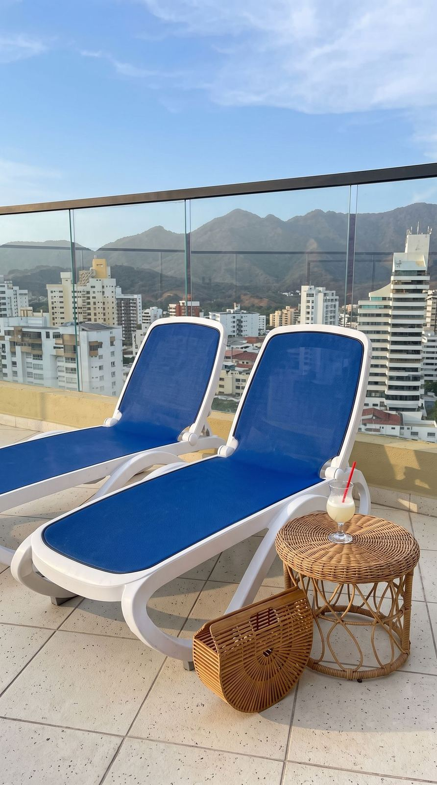

On foot
The beach is about two blocks away. Nearby restaurants, cafés, supermarkets, pharmacies, ATMs, and Gran Centro Comercial Arrecifes are all within walking distance.

Neighborhood
El Rodadero is one of Santa Marta’s main beach areas. The beach is about two blocks from the apartment.
There is a lot nearby. Restaurants, coffee shops, supermarkets, pharmacies, ATMs, and small local stores are all within walking distance. Gran Centro Comercial Arrecifes is close too if you need groceries, shopping, or a quick meal. Ten minutes away, there is also the Centro Comercial Zazue.
It is a busy area, especially on weekends, holidays, and at night. You will see families, visitors, beach vendors, and people out for dinner. That is part of the Rodadero experience.

Getting around
The beach is about two blocks away. Nearby restaurants, cafés, supermarkets, pharmacies, ATMs, and Gran Centro Comercial Arrecifes are all within walking distance.
Taxis are easy to find. You can also use ride-hailing apps where available. Ask the driver to confirm the fare before leaving.
For Santa Marta’s historic center, Taganga, Minca, Tayrona National Park, or the airport, a taxi or private driver is usually the easiest option.
One parking space is available for guests traveling with a car. Confirm parking instructions before arrival.
Day trips
Taxis are easy to find. From here, you can visit:
Santa Marta’s historic center, usually easiest by taxi or private driver.
The neighboring bay, a short ride from Rodadero.
Cooler mountain air above the city.
A taxi or private driver is usually the easiest way there.
A beach trip from Rodadero.
Also an easy outing by taxi.
Book Now
Stay in El Rodadero, Santa Marta — a walkable beach neighborhood with restaurants, shops, and easy day trips. Inquire now to book this Caribbean apartment rental.